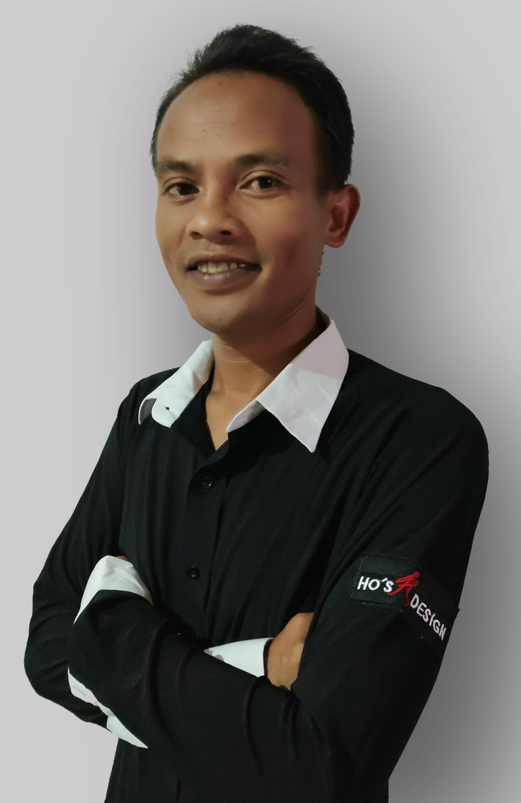

à propos
RAKOTOARISOA
Nasandratrininana
ayant plusieurs années d'experiences entant que technicien informatique
je me lance actuelement dans un developpement de mes compéténces...
ayant plusieurs années d'experiences entant que technicien informatique
je me lance actuelement dans un developpement de mes compéténces...
* depuis Octobre 2023 (durée 6 mois) Stagiaire en CDAN (Concepteur Developpeur d'Application Numerique) chez Inclusiv Academy
* 2014 Ingenieur en Informatique (IS IESI)
* 2012 Licence Professionel en Informatique (IS IESI)
-MatAgri : une plateforme de mise en relation des entreprises
de location avec les agriculteurs ou les coopératives agricoles
Connaissance solide sur la conception d’une application Prise en main de C#, WPF, .Net, PostgreSQL
-Maintenance réseau, système et matériels
-Administration et maintenance du réseau et système
-Administration et maintenance du réseau et système
-Maintenance du réseau et des matériels
-Responsable de l’administration
-Administration et maintenance du réseau et système